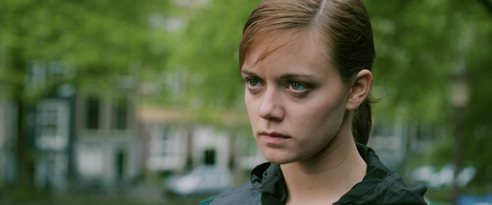
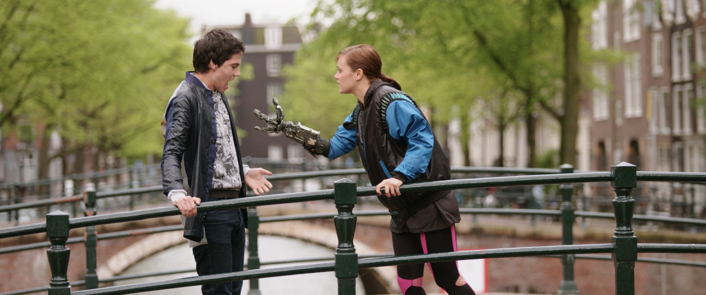
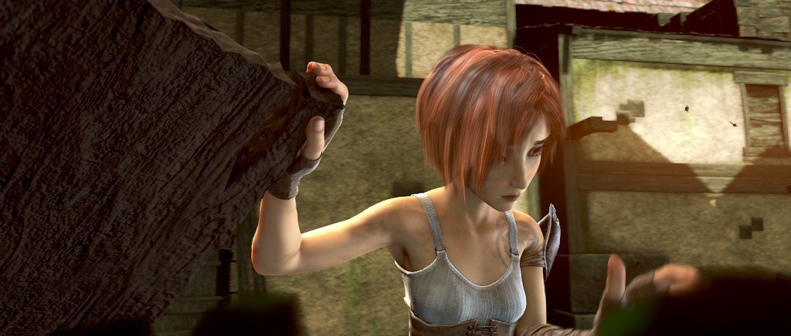
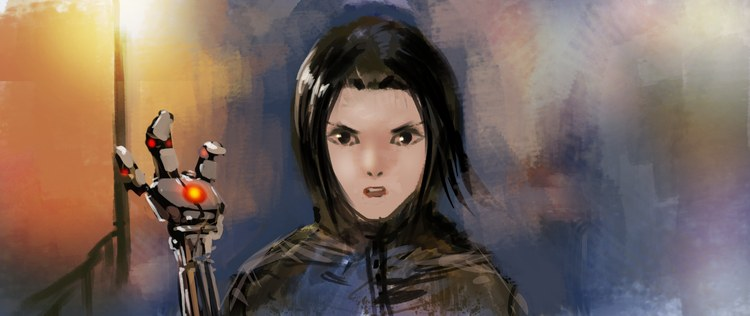

FRI06NOV / 19:00

Image unavailable
Live action + visual effects 2012 12 min
A familiar city meets an unfamiliar future. An Amsterdam bridge becomes the meeting point between live action and an invented world.
Independent films. Shared evenings.
November 2026 / sample edition

01of 02 / open movieFilm image unavailable.
Opening night Friday 06 November, 19:00
The November programme
Two open films. Two different ways of making the impossible feel close. Stay for the conversation.
Sample screenings 06 & 13 Nov

Image unavailable
Live action + visual effects 2012 12 min
A familiar city meets an unfamiliar future. An Amsterdam bridge becomes the meeting point between live action and an invented world.

Image unavailable
Animation 2010 15 min
A young traveller searches for a dragon she once helped. A small act of care becomes the beginning of a much longer journey.
No screenings saved yet.
After the credits

Storyboard unavailable.
What changes when a world is built together?
The two films in this programme share more than a studio. Their creators opened up the production materials: a film can be watched as a story, then explored as a collection of decisions.
For our first conversation, start with the bridge in Tears of Steel. Which details belong to the city, and which make it feel like a different place? Then take the same question into Sintel's world.
Explore the original production galleryThe club
Common Frame is a city film-club concept built around small programmes and unhurried conversations. Come for a film. Leave with a new way of looking.
This is a sample November programme. Saving a screening keeps a viewing plan on this device; it does not reserve a seat.
Tears of Steel imagery: (CC) Blender Foundation | mango.blender.org. CC BY 3.0.
Sintel production image: copyright Blender Foundation | durian.blender.org. CC BY 3.0.
The programme uses original official imagery. Film images remain credited to their creators.